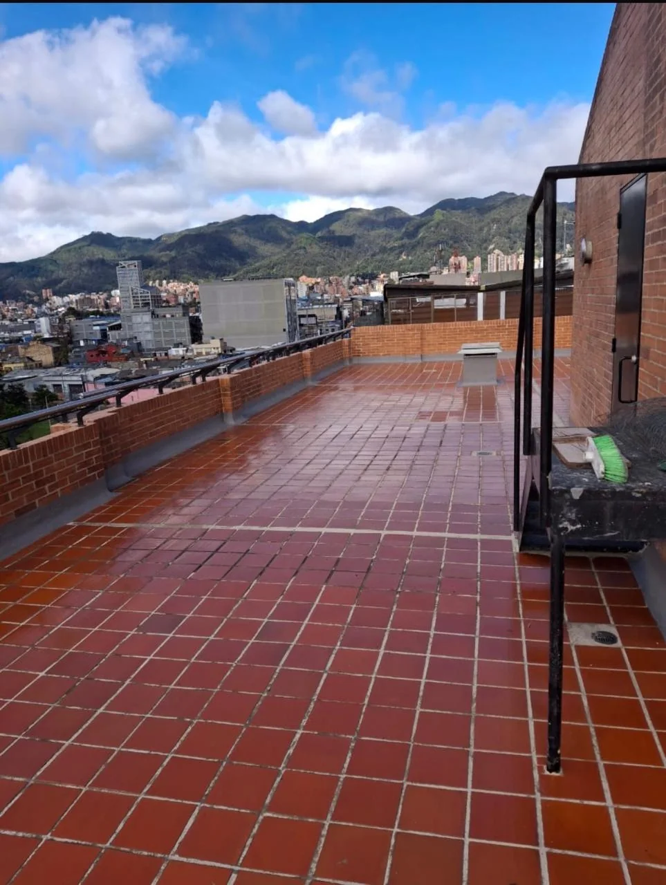
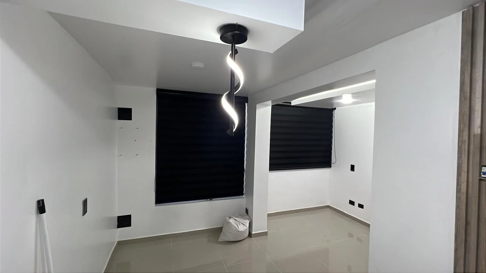
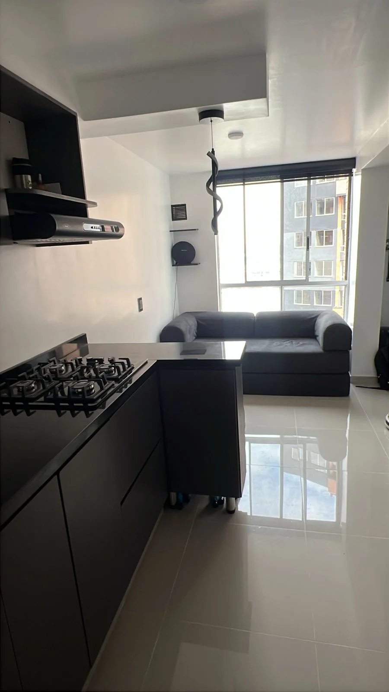
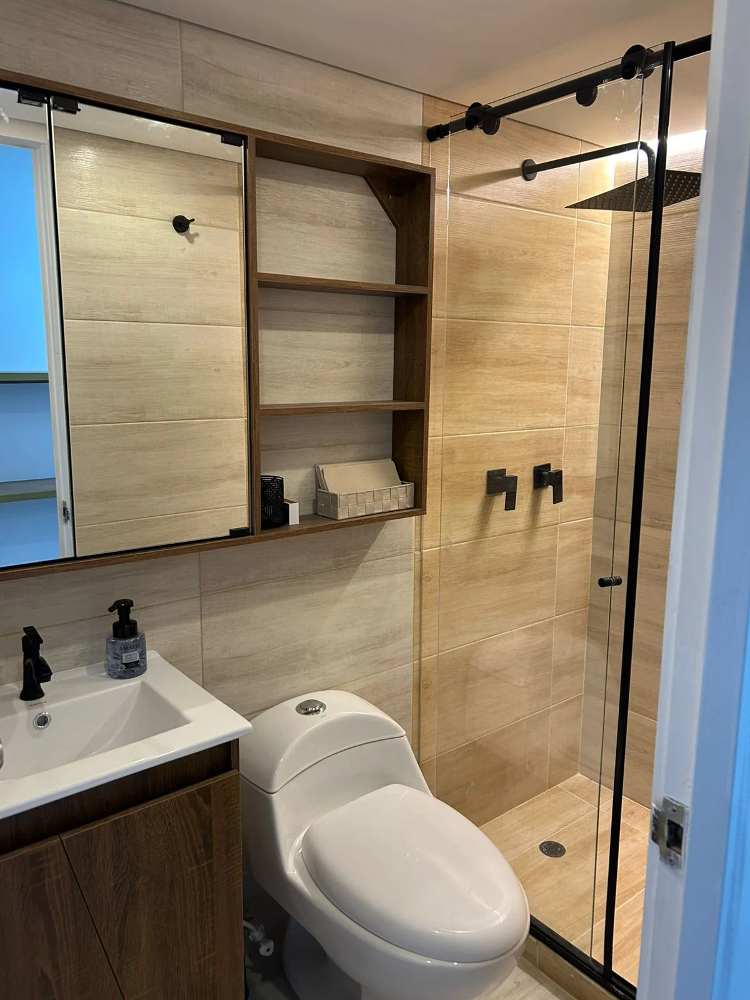

Impermeabilización
Impermeabilización de terrazas y cubiertas
Proceso técnico y superficie terminada.

Construcción · remodelación · acabados
Remodelamos espacios residenciales y comerciales con planeación, seguimiento de obra y evidencia real del proceso.
Respaldo técnico
La diferencia está en diagnosticar, definir alcance y coordinar el proceso con criterio de ingeniería civil.
Trabajo real
Remodelación residencial, impermeabilización, adecuaciones comerciales, baños y acabados muestran capacidades distintas con obra real.

Cocina, baño, cielo raso y acabados interiores.

Proceso técnico y superficie terminada.

Servicios principales
Baños, viviendas, drywall, pisos, impermeabilización y adecuaciones comerciales se presentan como frentes de obra respaldados por fotografías reales.
Cómo trabajamos
Cuatro momentos para pasar de una idea inicial a una intervención con alcance y seguimiento.
Lectura del espacio y sus condiciones reales.
Actividades, prioridades y ruta inicial de obra.
Coordinación técnica durante el desarrollo.
Revisión de acabados y detalles visibles.
Cotización
Envía fotos del estado actual, tipo de espacio y alcance deseado. SANBU te orienta desde una primera lectura técnica.
Atendemos remodelación residencial, comercial, acabados e impermeabilización.